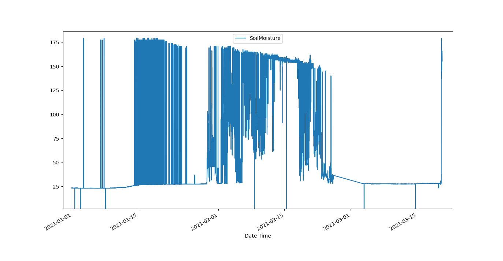

Data Regularisation¶
The tutorial aims to introduce the usage of SaQC methods, in order to obtain regularly sampled data derivatives
from given time series data input. Regularly sampled time series data, is data, that exhibits a constant temporal
spacing in between subsequent data points.
In the following steps, the tutorial guides through the usage of the SaQC resampling library.
Initially, we introduce and motivate regularisation techniques and we do import the tutorial data.
We will get an overview over the main Regularisation methods, starting with the shift.
We introduce the notion of valid data and see how sparse intervals and those with multiple values interact with regularisation.
We use the Aggregation and the Interpolation method.
We see how regularisation interacts with Flags.
Why Regularisation¶
Often, measurement data does not come in regularly sampled time series. The reasons, why one usually would like to have time series data, that exhibits a constant temporal gap size in between subsequent measurements, are manifold.
The 2 foremost important ones, may be, that statistics, such as mean and standard deviation usually presuppose the set of data points, they are computed of, to be equally weighted.
The second reason, is, that, relating data of different sources to another, is impossible, if one has not a mapping at hand, that relates the different date time indices to each other. One easy and intuitive way of constructing such a mapping, is to just resample all data at the same (regular) timestamp.
Tutorial Data¶
The following dataset of Soil Moisture measurements may serve as example data set:
Lets import it and check out the first and last lines. .. doctest:: example
>>> import pandas as pd
>>> data_path = './resources/data/SoilMoisture.csv'
>>> data = pd.read_csv(data_path, index_col=0)
>>> data.index = pd.DatetimeIndex(data.index)
>>> data
SoilMoisture
2021-01-01 00:09:07 23.429701
2021-01-01 00:18:55 23.431900
2021-01-01 00:28:42 23.343100
2021-01-01 00:38:30 23.476400
2021-01-01 00:48:18 23.343100
... ...
2021-03-20 07:13:49 152.883102
2021-03-20 07:26:16 156.587906
2021-03-20 07:40:37 166.146194
2021-03-20 07:54:59 164.690598
2021-03-20 08:40:41 155.318893
[10607 rows x 1 columns]
The data series seems to start with a sampling rate of roughly 10 minutes. Somewhere the sampling rate changes, and at the end it seems to exhibit an intended sampling rate of 15 minutes.
Finding out about the proper sampling a series should be regularized to, is a subject on its own and wont be covered here. Usually, the intended sampling rate of sensor data is known from the specification of the sensor.
If that is not the case, and if there seem to be more than one candidates for a rate regularisation, a rough rule of thumb, aiming at minimisation of data loss and data manipulation, may be, to go for the smallest rate seemingly present in the data.
Regularisations¶
So lets transform the measurements timestamps to have a regular 10 minutes frequency. In order to do so, we have to decide what to do with each time stamps associated data, when we alter the timestamps value.
Basically, there are three types of regularisations methods:
We could keep the values as they are, and thus, just shift them in time to match the equidistant 10 minutes frequency grid, we want the data to exhibit.
We could calculate new, synthetic data values for the regular timestamps, via an interpolation method.
We could apply some aggregation to up- or down sample the data.
Shift¶
Lets apply a simple shift via the shift() method.
>>> import saqc
>>> qc = saqc.SaQC(data)
>>> qc = qc.shift('SoilMoisture', target='SoilMoisture_bshift', freq='10min', method='bshift')
Target parameter¶
We selected a new target field, to store the shifted data to a new field, so that our original data wouldnt be
overridden.
Freq parameter¶
We passed the freq keyword of the intended sampling frequency in terms of a
date alias string. All of
the regularisations methods have such a frequency keyword,
and it just determines the sampling rate, the resulting regular timeseries will have.
Shifting Method¶
With the method keyword, we determined the direction of the shift. We passed it the string bshift -
which applies a backwards shift, so data points get shifted backwards, until they match a timestamp
that is a multiple of 10 minutes. (See shift() documentation for more
details on the keywords.)
Lets see, how the data is now sampled. Therefore, we use the data Atribute from the
SaQC object. This will prevent the methods output from
being merged to a pandas.DataFrame object, and the changes from the resampling will be easier
comprehensible from one look.
Shifted data¶
>>> qc.data
SoilMoisture | SoilMoisture_bshift |
================================ | ======================================= |
2021-01-01 00:09:07 23.429701 | 2021-01-01 00:00:00 23.429701 |
2021-01-01 00:18:55 23.431900 | 2021-01-01 00:10:00 23.431900 |
2021-01-01 00:28:42 23.343100 | 2021-01-01 00:20:00 23.343100 |
2021-01-01 00:38:30 23.476400 | 2021-01-01 00:30:00 23.476400 |
2021-01-01 00:48:18 23.343100 | 2021-01-01 00:40:00 23.343100 |
... | ... ... |
2021-03-20 07:13:49 152.883102 | 2021-03-20 08:10:00 NaN |
2021-03-20 07:26:16 156.587906 | 2021-03-20 08:20:00 NaN |
2021-03-20 07:40:37 166.146194 | 2021-03-20 08:30:00 NaN |
2021-03-20 07:54:59 164.690598 | 2021-03-20 08:40:00 155.318893 |
2021-03-20 08:40:41 155.318893 | 2021-03-20 08:50:00 NaN |
[10607] [11286]
max: [11286 rows x 2 columns]
We see, the first and last 10 datapoints of both, the original data time series and the shifted one.
Obveously, the shifted data series now exhibits a regular sampling rate of 10 minutes, with the index
ranging from the latest timestamp, that is a multiple of 10 minutes and preceeds the initial timestamp
of the original data, up to the first 10 minutes multiple, that succeeds the last original datas timestamp.
This is default behavior to all the regularisations provided by saqc.
Data Loss and Empty Intervals¶
The number of datapoints (displayed at the bottom of the table columns) has changed through the transformation as well. That change stems from 2 sources mainly:
Empty Intervals¶
If there is no valid data point available within an interval of the passed frequency,
that could be shifted to match a multiple of the frequency, a NaN value gets inserted to represent the fact,
that in the interval that is represented by that date time index, there was data missing.
Valid Data¶
Data points are referred to, as valid, in context of a regularisation, if:
the data points value is not
NaNthe flag of that datapoint has a value lower than the value passed to the methods
to_maskkeyword - since this keyword defaults to the highest flag level available, defaultly, all data flaggedBAD, is considered invalid by that method.
Note, that, from point 2 above, it follows, that flagging data values before regularisation, will effectively exclude them from the regularistaion process. See chapter flagging and resampling for an example of this effect and how it can help control data reduction.
data reduction¶
If there are multiple values present within an interval with size according to the passed frequency alias passed to
freq, this values get reduced to one single value, that will get assigned to the timestamp associated with the
interval.
This reduction depends on the selected regularisation method.
For example, above, we applied a backwards shift() with a 10 minutes frequency.
As a result, the first value, encountered after any multiple of 10 minutes, gets shifted backwards to be aligned with
the desired frequency and any other value in that 10 minutes interval just gets discarded.
See the below chunk of our processed SoilMoisture data set to get an idea of the effect. There are 2 measurements
within the 10 minutes interval ranging from 2021-01-01 07:30:00 to 2021-01-01 07:40:00 present
in the original data - and only the first of the two reappears in the shifted data set, as representation
for that interval.
>>> qc.data["2021-01-01 07:00:00":"2021-01-01 08:00:00"]
SoilMoisture_bshift | SoilMoisture |
================================ | ========================================= |
Date Time | Date Time |
2021-01-01 07:00:00 23.3431 | 2021-01-01 07:00:41 23.3431 |
2021-01-01 07:10:00 23.3431 | 2021-01-01 07:10:29 23.3431 |
2021-01-01 07:20:00 23.2988 | 2021-01-01 07:20:17 23.2988 |
2021-01-01 07:30:00 23.3874 | 2021-01-01 07:30:05 23.3874 |
2021-01-01 07:40:00 23.3431 | 2021-01-01 07:39:53 23.3853 |
2021-01-01 07:50:00 23.3874 | 2021-01-01 07:49:41 23.3431 |
Minimize Shifting Distance¶
Notice, how, for example, the data point for 2021-01-01 07:49:41 gets shifted all the way back, to
2021-01-01 07:40:00 - although, shifting it forward to 07:40:00 would be less a manipulation, since this timestamp
appears to be closer to the original one.
To shift to any frequncy aligned timestamp the value that is closest to that timestamp, we
can perform a nearest shift instead of a simple back shift, by using the shift method "nshift":
>>> qc = qc.shift('SoilMoisture', target='SoilMoisture_nshift', freq='10min', method='nshift')
>>> qc.data['2021-01-01T07:00:00':'2021-01-01T08:00:00']
SoilMoisture_nshift | SoilMoisture |
================================ | ========================================= |
Date Time | Date Time |
2021-01-01 07:00:00 23.3431 | 2021-01-01 07:00:41 23.3431 |
2021-01-01 07:10:00 23.3431 | 2021-01-01 07:10:29 23.3431 |
2021-01-01 07:20:00 23.2988 | 2021-01-01 07:20:17 23.2988 |
2021-01-01 07:30:00 23.3874 | 2021-01-01 07:30:05 23.3874 |
2021-01-01 07:40:00 23.3853 | 2021-01-01 07:39:53 23.3853 |
2021-01-01 07:50:00 23.3431 | 2021-01-01 07:49:41 23.3431 |
Now, any timestamp got assigned, the value that is nearest to it, if there is one valid data value available in the interval surrounding that timestamp with a range of half the frequency. In our example, this would mean, the regular timestamp would get assigned the nearest value of all the values, that preceed or succeed it by less than 5 minutes.
Maybe check out, what happens with the chunk of the final 2 hours of our shifted Soil Moisture dataset, to get an idea.
>>> qc.data['2021-03-20 07:00:00':]
SoilMoisture_nshift | SoilMoisture |
================================ | ========================================= |
Date Time | Date Time |
2021-03-20 07:00:00 145.027496 | 2021-03-20 07:13:49 152.883102 |
2021-03-20 07:10:00 152.883102 | 2021-03-20 07:26:16 156.587906 |
2021-03-20 07:20:00 NaN | 2021-03-20 07:40:37 166.146194 |
2021-03-20 07:30:00 156.587906 | 2021-03-20 07:54:59 164.690598 |
2021-03-20 07:40:00 166.146194 | 2021-03-20 08:40:41 155.318893 |
2021-03-20 07:50:00 164.690598 | 2021-03-20 08:40:41 155.318893 |
2021-03-20 08:00:00 NaN | |
2021-03-20 08:10:00 NaN | |
2021-03-20 08:20:00 NaN | |
2021-03-20 08:30:00 NaN | |
2021-03-20 08:40:00 155.318893 | |
2021-03-20 08:50:00 NaN | |
Since there is no valid data available, for example, in the interval from 2021-03-20 07:55:00 to 2021-03-20 08:05:00 - the new value
for the regular timestamp 2021-03-20 08:00:00, that lies in the center of this interval, is NaN.
Aggregation¶
If we want to comprise several values by aggregation and assign the result to the new regular timestamp, instead of
selecting a single one, we can do this, with the resample() method.
Lets resample the SoilMoisture data to have a 20 minutes sample rate by aggregating every 20 minutes intervals
content with the arithmetic mean (which is implemented by numpies numpy.mean function for example).
>>> import numpy as np
>>> qc = qc.resample('SoilMoisture', target='SoilMoisture_mean', freq='20min', method='bagg', func=np.mean)
>>> qc.data
SoilMoisture | SoilMoisture_mean |
================================ | ===================================== |
Date Time | Date Time |
2021-01-01 00:09:07 23.429701 | 2021-01-01 00:00:00 23.430800 |
2021-01-01 00:18:55 23.431900 | 2021-01-01 00:20:00 23.409750 |
2021-01-01 00:28:42 23.343100 | 2021-01-01 00:40:00 23.320950 |
2021-01-01 00:38:30 23.476400 | 2021-01-01 01:00:00 23.365250 |
2021-01-01 00:48:18 23.343100 | 2021-01-01 01:20:00 23.320950 |
2021-01-01 00:58:06 23.298800 | 2021-01-01 01:40:00 23.343100 |
2021-01-01 01:07:54 23.387400 | 2021-01-01 02:00:00 23.320950 |
2021-01-01 01:17:41 23.343100 | 2021-01-01 02:20:00 23.343100 |
2021-01-01 01:27:29 23.298800 | 2021-01-01 02:40:00 23.343100 |
2021-01-01 01:37:17 23.343100 | 2021-01-01 03:00:00 23.343100 |
... | ... ... |
2021-03-20 05:07:02 137.271500 | 2021-03-20 05:40:00 154.116806 |
2021-03-20 05:21:35 138.194107 | 2021-03-20 06:00:00 150.567505 |
2021-03-20 05:41:59 154.116806 | 2021-03-20 06:20:00 NaN |
2021-03-20 06:03:09 150.567505 | 2021-03-20 06:40:00 145.027496 |
2021-03-20 06:58:10 145.027496 | 2021-03-20 07:00:00 152.883102 |
2021-03-20 07:13:49 152.883102 | 2021-03-20 07:20:00 156.587906 |
2021-03-20 07:26:16 156.587906 | 2021-03-20 07:40:00 165.418396 |
2021-03-20 07:40:37 166.146194 | 2021-03-20 08:00:00 NaN |
2021-03-20 07:54:59 164.690598 | 2021-03-20 08:20:00 NaN |
2021-03-20 08:40:41 155.318893 | 2021-03-20 08:40:00 155.318893 |
[10607] [5643]
Aggregation functions¶
You can pass arbitrary function objects to the func parameter, to be applied to calculate every intervals result,
as long as this function returns a scalar float value upon an array-like input. (So np.median would be propper
for calculating the median, sum, for assigning the value sum, and so on.)
Aggregation method¶
As it is with the shift functionality, a method keyword controlls, weather the
aggregation result for the interval in between 2 regular timestamps gets assigned to the left (=bagg) or to the
right (fagg) boundary timestamp.
Also, analogous to to the shift functionality, intervals of size
freq, that do not contain any valid data, that could be aggregated, getǹp.nanassigned.
Interpolation¶
Another common way of obtaining regular timestamps, is, the interpolation of data at regular timestamps.
In the pool of py:mod:regularisation <Functions.saqc.resampling> methods, is available the
interpolate() method.
Lets apply a linear interpolation onto the dataset. To access
linear interpolation, we pass the method parameter the string "time". This
applies an interpolation, that is sensitive to the difference in temporal gaps
(as opposed by "linear", wich expects all the gaps to be equal). Get an overview
of the possible interpolation methods in the interpolate>()
documentation. Lets check the results:
>>> qc = qc.interpolate('SoilMoisture', target='SoilMoisture_linear', freq='10min', method='time')
>>> qc.data
SoilMoisture | SoilMoisture_linear |
================================ | ========================================= |
Date Time | Date Time |
2021-01-01 00:00:00 NaN | 2021-01-01 00:09:07 23.429701 |
2021-01-01 00:10:00 23.429899 | 2021-01-01 00:18:55 23.431900 |
2021-01-01 00:20:00 23.422067 | 2021-01-01 00:28:42 23.343100 |
2021-01-01 00:30:00 23.360782 | 2021-01-01 00:38:30 23.476400 |
2021-01-01 00:40:00 23.455997 | 2021-01-01 00:48:18 23.343100 |
2021-01-01 00:50:00 23.335415 | 2021-01-01 00:58:06 23.298800 |
2021-01-01 01:00:00 23.315977 | 2021-01-01 01:07:54 23.387400 |
2021-01-01 01:10:00 23.377891 | 2021-01-01 01:17:41 23.343100 |
2021-01-01 01:20:00 23.332627 | 2021-01-01 01:27:29 23.298800 |
2021-01-01 01:30:00 23.310176 | 2021-01-01 01:37:17 23.343100 |
... | ... ... |
2021-03-20 07:20:00 154.723105 | 2021-03-20 05:07:02 137.271500 |
2021-03-20 07:30:00 NaN | 2021-03-20 05:21:35 138.194107 |
2021-03-20 07:40:00 NaN | 2021-03-20 05:41:59 154.116806 |
2021-03-20 07:50:00 165.195497 | 2021-03-20 06:03:09 150.567505 |
2021-03-20 08:00:00 NaN | 2021-03-20 06:58:10 145.027496 |
2021-03-20 08:10:00 NaN | 2021-03-20 07:13:49 152.883102 |
2021-03-20 08:20:00 NaN | 2021-03-20 07:26:16 156.587906 |
2021-03-20 08:30:00 NaN | 2021-03-20 07:40:37 166.146194 |
2021-03-20 08:40:00 NaN | 2021-03-20 07:54:59 164.690598 |
2021-03-20 08:50:00 NaN | 2021-03-20 08:40:41 155.318893 |
[11286] [10607]
Interpolation and Data Sparsity¶
The regularisation by interpolation is strict in the sense, that regular timestamps only get
interpolated, if they have at least one valid data value preceeding them and one
succeeding them within the given frequency range (wich is controlled by the freq keyword.).
Thats, why, you have no interpolation value at 2021-03-20 07:30:00 - bacause it is preceeded
by a valid value at 2021-03-20 07:26:16, but there is no valid value
available in between the succeeding 10 minutes interval from 2021-03-20 07:30:00 to 2021-03-20 07:30:00.
On the other hand, there is an interpolated value assigned to 2021-03-20 07:50:00, it is preceeded by
a valid value at 2021-03-20 07:40:37 and one succeeding at 2021-03-20 07:54:59.
This behavior is intended to reflect the sparsity of the original data in the
regularized data set. The behavior can be circumvented by applying the more general
interpolateIndex().
Linear Interpolation¶
Note, that there is a wrapper available for linear interpolation: linear().
Flags and Regularisation¶
Since data, that is flagged by a level higher or equal to the passed to_mask value
(default=:py:const:~saqc.constants.BAD), is not regarded valid by the applied function,
it can be of advantage, to flag data before regularisation in order to effectively exclude it
from the resulting regularly sampled data set. Lets see an example for the SoilMoisture data set.
>>> qc = qc.linear('SoilMoisture', target='SoilMoisture_linear', freq='10min')
>>> qc.data['2021-01-01 15:00:00':'2021-01-01 16:00:00']
SoilMoisture_linear | SoilMoisture |
================================ | ========================================= |
Date Time | Date Time |
2021-01-01 15:00:00 23.341182 | 2021-01-01 15:00:51 23.3410 |
2021-01-01 15:10:00 23.342964 | 2021-01-01 15:10:38 23.3431 |
2021-01-01 15:20:00 23.341092 | 2021-01-01 15:20:26 23.3410 |
2021-01-01 15:30:00 23.341000 | 2021-01-01 15:30:14 23.3410 |
2021-01-01 15:40:00 -119.512446 | 2021-01-01 15:40:02 -120.0000 |
2021-01-01 15:50:00 23.299553 | 2021-01-01 15:49:50 23.2988 |
At 2021-01-01 15:40:02 the original data exhibits a measurement value
of -120 - which is obviously not a valid data point, regarding the fact, that SoilMoisture measurements
should be percentage values in between 0 and 100.
Since we dont exclude the value from interpolation, it gets included in the interpolation
process for the regular timstamp at 2021-01-01 15:40:00 - wich, as a result, also exhibits
a non - sence value of -119.512446. We could now flag the resulting regular dataset and
exclude this calculated non sence value from further processing and analysis.
But, this would mean, that we would have a small data gap at this point.
We can circumvent having that gap, by flagging that value before interpolation. This
works, because there is actually another, now valid value, available in the interval
in between 2021-01-01 15:40:00 and 2021-01-01 15:50:00, that can serve as right pillow point
for the interpolation at 2021-01-01 15:40:00. So lets flag all the values smaller than 0
with the flagRange() method and after this,
do the interpolation.
>>> qc = qc.flagRange('SoilMoisture', min=0)
>>> qc = qc.interpolate('SoilMoisture', freq='10min', method='time')
>>> qc.data['2021-01-01T07:00:00':'2021-01-01T08:00:00']
SoilMoisture | SoilMoisture_original |
================================ | ========================================= |
Date Time | Date Time |
2021-01-01 15:00:00 23.341182 | 2021-01-01 15:00:51 23.3410 |
2021-01-01 15:10:00 23.342964 | 2021-01-01 15:10:38 23.3431 |
2021-01-01 15:20:00 23.341092 | 2021-01-01 15:20:26 23.3410 |
2021-01-01 15:30:00 23.341000 | 2021-01-01 15:30:14 23.3410 |
2021-01-01 15:40:00 23.319971 | 2021-01-01 15:40:02 -120.0000 |
2021-01-01 15:50:00 23.299553 | 2021-01-01 15:49:50 23.2988 |
back projection of flags¶
TODO

{kind=link}